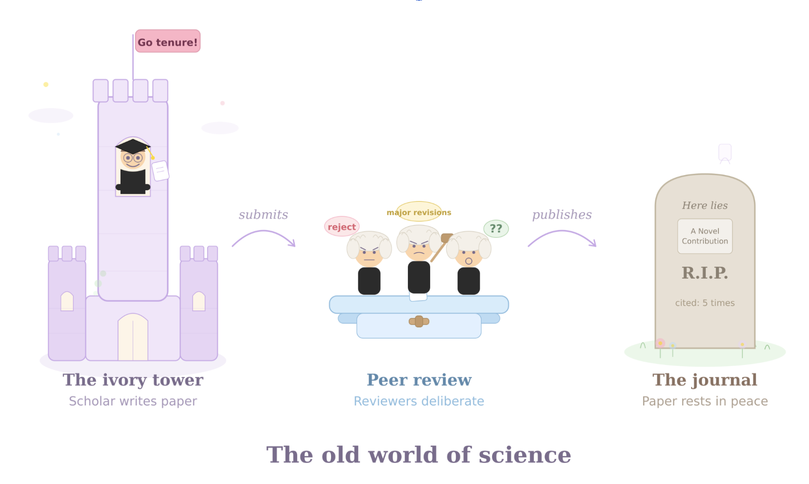
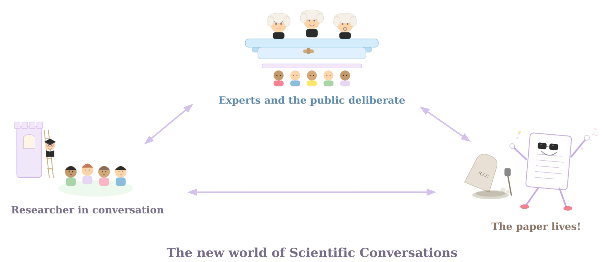

Scientific Conversations
A conversation with two scientists
Sunny: Modern science runs on an outdated paradigm. A small group of experts produces knowledge, and everyone else consumes it. Call it the Britannica model, after the old encyclopedia where a handful of scholars wrote the entries and the rest of us read them.
There's a reason science ended up this way. To be a modern day scientist is to be a specialist. Humanity has created so much knowledge that any one person can only know a tiny sliver of it. That is a sign of massive intellectual progress, but it is also a problem. When only insiders can meaningfully interrogate the assumptions, methods, and judgments on which knowledge rests, science becomes opaque to all. And what people can't see, they struggle to value. The sweeping cuts to federal research funding in the second Trump term are the culmination of this bad equilibrium: for a vocal segment of society, publicly funded research looks less like a public good and more like a waste of resources.
Tom: Then publication hardens that divide. Once a paper is published, busy scientists, whose careers are tied to publication records, have no incentive to revisit old analyses. Their work becomes static and frozen even as science moves on around it. Again, there was a reason for that; the scientific process used to move through print. If you print a journal and send it out into the world, and then the results change, you can't hunt down each copy and update it.

Tom: Encyclopedias used to work in the way that academic research does now. A small group of experts wrote entries, and everyone else consumed them. Britannica was the gold standard for two centuries, printed in books that salesmen would knock on your door to sell.
Sunny: Then Wikipedia came along and flipped the model, creating a space where anyone could contribute and challenge. Sure it was messy at first (and still is!) but eventually it produced something more comprehensive, more current, and more self-correcting than the expert-only version ever was. The key insight wasn't that expertise didn't matter; it was that useful knowledge could emerge from structured conversation among many people, not just lectures from a few. We think the same thing is about to happen to research.
Tom: AI tools can now translate the specialized language of any academic field into prose that a non-specialist can critically engage with. A curious reader no longer needs a Ph.D. to ask whether a paper's assumptions are reasonable, to trace the logic of its argument, or even to reanalyze its data using different methods. For the first time, we can imagine reversing the one-way flow from expert to public. Science need not remain a lecture. It can become a conversation.
Imagine a platform, call it Scientific Conversations, where any working paper, published article, or scientific claim becomes a site of open, structured discussion. Users replicate code and report what they find. They test how the results change under alternative assumptions. They annotate passages, add case studies, and supply the context of their lived experience. For building consensus, we can take lessons from crowdsourced tools that already work. X's Community Notes, for example, asks users whether a note is helpful, then examines their rating histories. The algorithm surfaces notes where people who have consistently disagreed in the past actually agree, the logic being that if people who normally disagree converge on something, it is probably accurate. We would apply the same principle to scientific discussion, where contributions gain visibility by earning credibility across researchers and readers with different priors.
The result is a synthesized, evolving companion to the original paper. It is not a replacement, but a living annotation layer that makes the paper's logic legible and contestable by anyone willing to do the work.
Sunny: Despite the hype around AI, it alone is not a panacea. In fact, a major DARPA-funded effort tried to use AI to predict which studies would replicate, and found AI just can't do it reliably. Human judgment remains key to scientific credibility. AI just lets us bring more people to the table.
Tom: Scientific Conversations would disrupt every part of the research process. Currently, researchers submit papers to journals; 2-3 people peer review their paper. If the journal decides to publish their paper, it is frozen into the scientific record, and becomes an unchanging corpse in the mausoleum of the journal website.
Sunny: Papers take on the appearance of permanence, even though everyone inside the field knows how provisional the literature really is. Results are fragile. Assumptions crack. Methods improve. Consensus shifts. No scientist believes that any one paper contains the last word, it is a stepping stone that allows the field to move forward as a whole. But for anyone outside the field, it is hard to see any of that movement.
Tom: When an error is serious enough to force the issue, the system falls to a blunt tool: retraction. That turns correction into a kind of public trauma. The wider public, encountering only the final drama, mistakes a technical correction for proof that science itself cannot be trusted. Incentives to correct the scientific record are small, and complicated by personal relationships and career incentives.
I know this firsthand. I was the first author on a critique that contributed to the retraction of a landmark paper in climate economics. The paper had made a striking claim about the scale of future economic damages from climate change. When I reanalyzed it, I found that its headline result did not replicate. What followed was long, technical, and personally difficult: rounds of review, deliberation, and then, once the retraction came, a wave of public distortion. A technical correction was turned into a political story. Some people treated it as evidence that climate science itself was unreliable.
Sunny: Large-scale replication projects have made real progress, but replication remains undervalued in a system that rewards novelty over scrutiny. Asking the academic establishment to reform itself means asking people to dismantle the very incentive structures that built their careers. Let's instead try a crowd-sourced, bottom-up approach that invites people outside the field. Let's invite people who aren't constrained by the academic incentives. Let's invite people who wouldn't feel embarrassed or scared to give open feedback to people they might run into at a conference.
Tom: For research that is cutting-edge, shifts priors, or carries large policy stakes, two or three peer reviewers are often too thin a stress test. We do not propose replacing peer review; expertise still matters, and editors need it. But we can complement it. Imagine a working paper that begins a conversation, by being uploaded to the Scientific Conversations platform alongside its code and data. Users replicate the study, annotate it, or add context from their experience. Journal editors receive not only traditional referee reports, but also a structured signal from a broader community: what held up, what broke, and where the real points of disagreement lie.
Sunny: That matters even more now, as the research system is under growing strain. Generative A.I. is making it easier to produce papers, while editors and reviewers are already grappling with overload and reviewer fatigue. A platform that crowdsources part of this process would not eliminate the need for expert review. It would help direct scarce expert attention to the questions that most need it.
This might seem far off, but there is already a partial analogue in my own field. In my research I design and run randomized controlled trials (RCTs). Over recent decades, professional bodies across many fields have created RCT registries, which allow researchers to pre-register their analysis, and guard against the possibility of changing the research question to spuriously find statistically significant results. All of my trials have been pre-registered on these sites before fieldwork begins. The process forces clarity. I commit to an analysis plan before I see the data, knowing that another researcher will compare my final paper against that plan a year from now. Of course, in practice, things change when I'm running the experiment. The pre-registration forces me to explain my decision-making process: to explain why the analysis diverged from the original plan. That gap between what I planned and what I did becomes itself a research output.

Tom: Scientific Conversations will incentivise researchers to produce better research, leading to more trust in the research system. The process will improve research by imbuing a norm of transparency and replication. You publish your code knowing someone will run it. You document your assumptions knowing someone will test alternatives. Transparency becomes the default.
But the point of Scientific Conversations is not adversarial, but to recognize mistakes, uncertainty, and context as a natural part of the scientific process. The goal is dialogue. Papers could have multiple editions, with credit given to those who extend or improve them. The research endeavour, refocused onto conversations and away from papers should incentivise a more dynamic, truthful form of science.
We are not starting from scratch
Sunny: Parts of this future already exist. Open access requirements to share code and data are an important first step. Open access can solve who gets the information. But it cannot, by itself, provide the means to challenge assumptions or to test methods. AI tools can now translate the specialized language of any academic field into prose that a non-specialist can critically engage with. Even more people could be empowered to really investigate a paper.
Tom: And large-scale replication projects have shown how much value there is in organized scrutiny. Some replications uncover errors, but others reveal something subtler. Results are often found to be contingent on modeling choices or assumptions that other researchers could reasonably have done differently. That distinction matters. The public should be able to see not just whether a result "replicated," but why it did or did not.
Sunny: Other pieces of the infrastructure are already taking shape. The Stacks, for instance, is an open-access digital publishing platform built around ongoing public comment rather than traditional pre-publication gatekeeping. At the moment, it is hosting work produced internally by Radial Science and its affiliates, but the model shows that publishing need not end when a paper appears; it can open into continuing evaluation. Scientific Conversations would complement that approach. A conversation would not depend on an author choosing to publish within a new system. It could begin anywhere there is already a paper, data, and code. Many journal articles, for example, already point readers to its materials. A conversation layer could simply begin there.
Tom: The core claim behind Scientific Conversations is simple: motivated experts and non-experts alike, equipped with A.I. tools, can engage meaningfully with published research.
Sunny and Tom: Let's test it! Recruit participants without specialist training in the relevant fields. Select published papers across a range of disciplines, each with publicly available materials and methods. Give participants access to A.I. tools and to a platform where they can ask questions, annotate arguments, rerun code, test assumptions, and discuss what they find. We'd need to pilot the rules of engagement and moderation, though we can learn from existing systems like Wikipedia and Community Notes.
Then watch what happens. Do participants cluster around certain papers? Do they raise methodological questions, rerun analyses, or challenge assumptions? Do authors engage? Does the discussion converge on something useful, or dissolve into noise? A panel of experts could then assess whether the resulting conversations surfaced insights that would genuinely help the authors and editors.